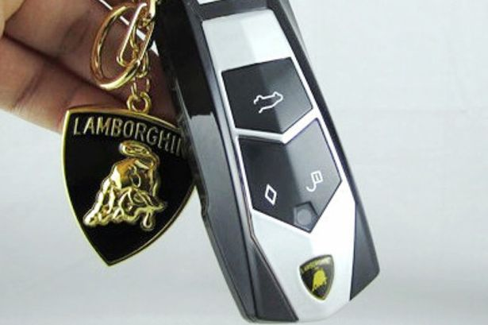
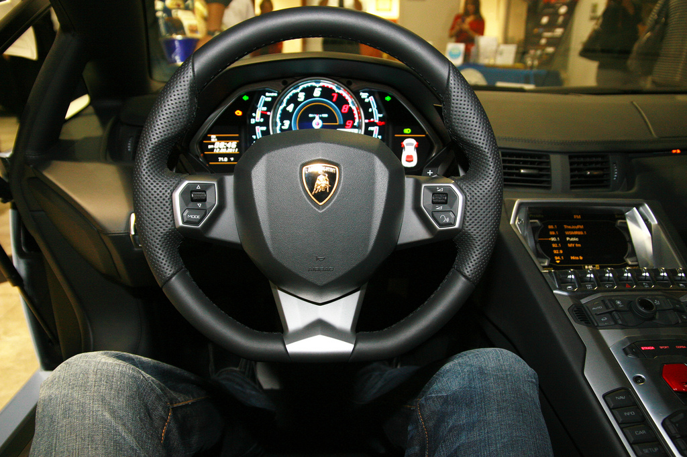
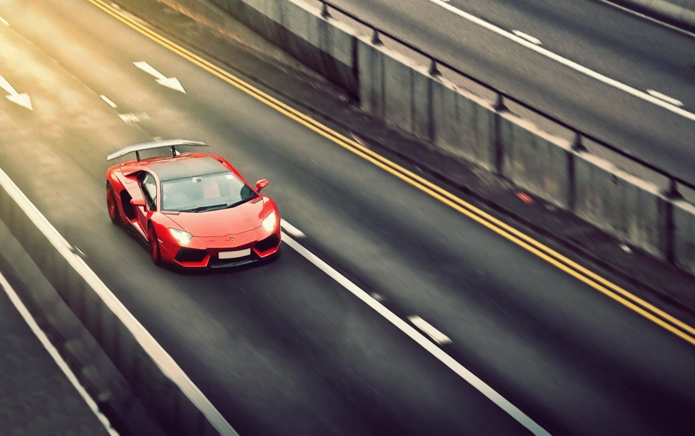

How To Put A Lamborghini Into Drive
Step 1
Take the key out of your pocket and unlock the car
Step 2
Open the car door and get in the drivers seat
Step 3
Put the key in the cupholder and press the START button to start the engine.
Step 4
Press the BREAK pedal in order to be able to shift gears from Park to DRIVE.
Step 5
Hit the GAS pedal and enjoy the ride!
Just Kidding because that would be innappropriate to condone such activity.
Click here to see fun facts about Lamborghini's
Lamborghini's!
- It takes about 130 people to hand-craft the Murcielago SV. The entire car is made of carbon fibre, except the steel roof and the doors.
- Ferruccio Lamborghini chose the bull logo for Lamborghini because his sun sign was Taurus.
- Lamborghini provides two Gallardos to the Italian state police, which uses the cars for delivering organ transplants to patients.